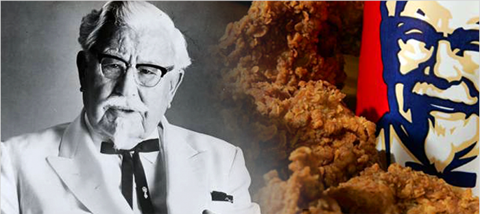

He reached celebrity status in 1952, when he decided to franchise his famous Kentucky Fried Chicken recipe blends of 11 herbs and spices to the rest of America. By the early 70's, that special recipe reached Malaysia.
Today, KFC Malaysia continues to serve finger lickin' good, succulent pieces of chicken. The flavourful blends of 11 herbs and spices give KFC's delicious aroma. With the chicken's natural juices sealed-in, leaving a special mouth watering taste that cannot be replaced. KFC prides itself as a fast-food restaurant that give customers great tasting chicken with a selection of home-styled side dishes and desserts to make a wholesome, complete and satisfying meal.
We are an establishment that is run by Malaysians and managed by Malaysians; we took it upon ourselves to create a selection of food that would make Malaysia proud on the international scene. Kentucky Nuggets, for example, was conceived in Malaysia and then found its way to KFC worldwide. Today, Kentucky Nuggets is one of KFC's successes.
"Meals on Wheels" was also developed in Malaysia. It was created for the purpose of bringing great tasting chicken to places where a KFC Restaurant might not be available. So, any offices or companies can hold functions at any place and anytime!
All our achievements add to our Malaysian identity. But it has only been possible because you invited us to share your lives.
Then we wanted something really special for our younger customers because they are integral part of our lives. So, the KFC Kids' Chicky Club was developed exclusively for kids. Even 'Chicky', KFC's mascot, takes an active interest in all the KFC Kids' Chicky Club activities.
We wanted to give every child something they can look forward to as a treat every weekend or on any special occasion. We sincerely hope that their childhood will be filled with wonderful memories.